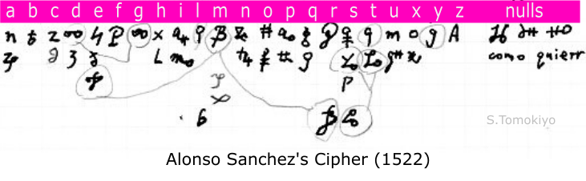

Ciphers of Imperial ambassadors Alonso Sanchez and Juan Manuel used in their correspondence with Emperor Charles V in 1522 are described.
Alonso Sanchez was the imperial ambassador to Venice at the time of the Italian War of 1521-1526, in which the Emperor Charles V, allied with England and the Pope, fought against France and Venice (Wikipedia). Alonso Sanchez's letters to the Emperor and Chancellor Mercurino di Gattinara (Wikipedia) are calendared in Calendar of Letters, Despatches, and State Papers, Relating to the Negotiations Between England and Spain [CSP Spain] vol.2 (1866) (Google, British History Online), of which most are lebelled "Autograph in cipher. Contemporary deciphering".
However, more undeciphered letters in cipher are in BRAH [Biblioteca de la Real Academia de la Historia] (corresponding to "M.Re.Ac.d.His.Salazar" in CSP).
After I reported two undeciphered letters of Alonso Sanchez in the DECODE database ("Unsolved Historical Ciphers"), more have been added to DECODE. The decryption attached to one of them allowed me to reconstruct the cipher.
The cipher used in Alonso Sanchez's letters to the Emperor or the Chancellor has a substitution alphabet and the nomenclature for representing words with three-letter codes. (In ordering three-letter codes of the form "bac", "b" is the most significant and "c" is the second most significant.) This is the type of Spanish cipher used in 1496 during the time of Ferdinand and Isabella (see another article). The large vocabulary is impressive at such an early stage.

|
a(h)un zid ahun zod al zud allende zef algun zif alla zog alli zug antes zel aqui zem aquell zom arma zen assi zun bien yib buen yuc capitan yag capitula yig carta yeh causa yoh cierto yom como yon con xa cosa xeb concorda xuc contra xed cre(h)e xid creo xod |
da xof deue xuf de xig dezir? xog del xel dello xil despues xul desponho va dinero vo di vu dix vuo dize vec dicho vic do vuc ducato vud echo? vag el veg embaxa vam emperador vim en vog entre vol enbia vil esto vom esta vum es ta espera te espa(g)nol? teb escrevi tub exercito? toc |
favor tid falta? taf francia tom frances tum fue sa gasta? sab galera sib gente sac governador sid guarda sef guerra sof ha(s) suf habra seg have sog habla sug haui sam hombre re infante rac Inglaterra rec justa? rof la rug lo pac lugar pec luego pic llega pi |
Marquese Pescara pad mas ped mal pid magestad pud menda paf me pef menos pof mente pag mesmo pog mesor? pif mente? pil mi pol muy ne nuestra? neb nada? nuc necessidad nod ni nef no nuf nuissa? no obispo nel obliga nul occorie ma officio meb otra maf otro mud os mod |
paz mef parte mof parti muf passe? mig passa mog palabla? mug parecia mel para mil persona mol pensor? mem por lu principe lac prometi lic principal lod puisio?? lof pues lig publico lug publica lal pudi lol qual lul quando lam quatro lom quanto ha? que ho quien hob |
rey hed Rey de Francia hid Rey de Hungria haf reyno hof respuesta hig recebi? hug rompe ge se gad senor gub secreto goc si geg sobre gel sospecha gul su gam suquos? gim tambien fob tanta fib tene fab tiene? fic tenia fod tiempo fud todo faf tres? fug turco fen |
ver dib veni ded vi dod visorey def Visorey de Napoles dif vimes dog un dal union del venecia do voluntad dol vuestra dom xviii cob [xix cub] xx cad [xxi ced] [xxii cid] [xxiii cod] xxiv? cud xxv caf ya cig yo cem za? con |
Given the contemporary decipherment, reconstruction of the cipher should not pose an essential difficulty.
When I was browsing the last part of DECODE R9613, I noted "vog" and "xig" were frequent, which may be common monosyllable words. A "q" with double bar are often affixed to a three-letter code and may well be the plural ending "s". Although these observations turned out to be correct, I was stuck partly because I find it hard to read the handwriting (not so badly written) of the decipherment.
When I turned to DECODE 9605, I noticed "vog veg" close to the end. From my experience with three-letter codes in contemporary Spanish ciphers, I thought these should be words close to each other in the alphabetical listing. Moreover, both "vog" and "veg" are frequent. I could readily spot "en el" close to the end of the plaintext. After identifying "vog"="en" and "veg"="el", there was no real difficulty in reconstructing the cipher.
My reconstruction is mainly based on DECODE 9605, occasionally supplemented from other letters.
CSP calendars only plaintext available in the archives, and does not record ciphertext without decryption.
The DECODE database records ciphertexts in the archives, with decryption where available. However, it seems data collection in DECODE is still in progress and it does not cover the whole period. Further, there are letters for which plaintext recorded in CSP is not in DECODE (i.e., some of the labels "Non-decrypted" needs to be changed).
The following is a list of letters of Alonso Sanchez preserved in BRAH [Biblioteca de la Real Academia de la Historia] and recorded in DECODE. Decryption of the beginning is given, a by-product from checking the use of the same cipher.
=R9596
=R9608
BRAH Signatura 9/23 f.27
Esta no che [p...?] da de-s-p-a-c-h-e un a-p-o-s-t-a para vuestra magestad con
BRAH Signatura 9/23 f.73
recebi[?] da-s la-s cartas de vuestra magestad de [xxiv?]
BRAH Signatura 9/23 f.92
Esto-s me enbia-r-o-n a no c-h-e un [s...?]-r-i-o a es a-u-s-a-r
BRAH Signatura 9/23 f.104
A [xix] de es-t-e escrevi a vuestra magestad a-z-i-en-do l-e s-a-b-e-r lo que lo-s de esta r-e-publica me r-e-s-p-o-n-di-e-r-o-n a c-a-b-o-z-e [s/t...?].
BRAH Signatura 9/23 f.115
Lo-s d-e esta r-e-publica me enbia-r-o-n a [?]-r un-a carta que
BRAH Signatura 9/23 f.137
recebi[?] la-s de vuestra magestad de [xxviii?] y la-s que para Do-n J-o-a-n me
BRAH Signatura 9/23 f.182
Un f-r-a-y-t-e que aqui[?] esta por f-r-a-n-c-i-s-c-o m-a-r-i-a
BRAH Signatura 9/23 f.198
Esto-s dize-n no [t...?]-r otra-s n-u-e-v-a-s del c-a-n-p-o de
BRAH Signatura 9/23 f.217
Es-t-e p-l-i-g-o-e recebi[?]-do esta m-a-n-y-a-n-a antes de a-m-a-n-e-c-e-r de Do-n J-o-a-n
BRAH Signatura 9/23 f.258
recebi[?]-da la-s carta-s de vuestra magestad de [*some date?] fuy con lo-s de esta r-e-publica y di-x-e l-e-s que
BRAH Signatura 9/24 f.13
El p-o-s-t-r-e-h[?]-o del [p...?] do escrevi a vuestra magestad y l-e de-s-p-a-c-h-e p-o-s-t-a con el havi-s-o que lo-s d-e esta r-e-publica t-e-n-i-a-n
BRAH Signatura 9/24 f.18
a-y-e-r escrevi a vuestra magestad y l-e di-x-e como me havi-me-an lo-s de esta r-e-publica dicho que el Do-m-i-n-g-o me di-r-i-a-n lo que havi-a-n a-c-o-r-d-a-do de r-e-s-p-o-n-de-r
BRAH Signatura 9/24 f.39
BRAH Signatura 9/24 f.44
... en esta o-r-a e recebi[?]-do el i-n-a-l-u-s p-l-e-g-o de Do-n J-o-a-n
BRAH Signatura 9/24 f.65
A la carta de vuestra magestad de [xxix?] de a-b-r-i-l que a [*some date?] del [p...?] recebi[?] no ha(s)[?] i que r-es-p-o-n-de-r si
BRAH Signatura 9/24 f.96
Esto-s di-a-s ha-n h-o-v-i-do lo-s de esta r-e-publica carta-s de c-o-s-t-a-n-t-i f-o la-s en-b-i-o a-r-a
BRAH Signatura 9/24 f.107
recebi[?] la carta de vuestra magestad de [*some date?] a-y-e-r y como
BRAH Signatura 9/24 f.132
A-y-e-r en la t-a-r-de h-o-v-e carta-s de t-r-e-n-t-o de b-a-n-i-si-o con un-a p-o-s-t-a que me
BRAH Signatura 9/24 f.139
A do-s escrevi a vuestra magestad lo que o-c-o-nn-i-a despues lo-s de esta r-e-publica me ha-n dicho que ha-n
BRAH Signatura 9/24 f.167
El embaxa-do-r del turco que aqui vi-no se fue esta no c-h-e [p...?]
BRAH Signatura 9/24 f.203
BRAH Signatura 9/24 f.208
recebi[?] la-s de vuestra magestad del p-o-s-t-r-e-r-o del
BRAH Signatura 9/24 f.218
t-e-n-i-en-do [f...?] r-i t-a la otra que se-r-a con esta no me p-a-r-e-c-i-o de enbia-r-la pues s-o-n
BRAH Signatura 9/24 f.224
dicho que ha-n-da-do a-m-o-n-t m-o-r-en-c-i-do-s mi-l ducato-s no se si es assi
*f.226 may be the first folio in view of the nulls at the beginning:
La v-i-s-p-e-r-a de s-a-n i-o-a-n en la t-a-r-de recebi[?] la-s carta-s de vuestra magestad d-e n-u-e-v-e y el di-a de s-a-n i-o-a-n por-da-r a esto-s
BRAH Signatura 9/24 f.241
La v-i-s-p-e-r-a de s-a-n j-o-a-n en la t-a-r-de recebi[?] la-s carta-s de vuestra magestad de n-u-e-v-e y el di-a de s-a-n j-o-a-n por-da-r a esto-s buen-a m-a-n-y-a-n-a f-u-y-a el l-os y l-es dix-e la-s n-u-e-v-a-s que
BRAH Signatura 9/24 f.246
... lo que es c-r-i-v-o a vuestra magestad y cierto [t...?] cre(h)e y do que[?] yo [g...?]-ll-o en esto-s es que[?] s-o-n mas frances-es que[?] lo-s del P-a-r-la-[m?]-en-to de P-a-r-i-s y no
BRAH Signatura 9/25 f.16
Mi do l en c-i-a la qual hasse y dix a-r-t-o-g-r-a-b-e y me has-t-e-n-i-do
BRAH Signatura 9/25 f.24
Esta-n-do do-l-i-en-t-e recebi[?] la carta de vuestra [s...?]-i-a de xx y veni-do Mi-c-e-r P-a-c-e-o
BRAH Signatura 9/25 f.56
(Decryption is written below the short ciphertext.)
A lo-que[?] p-u-e-do se-n-t-i-r lo-s de esta r-e-publica esta-n con nuisso[??] de-ss-e-o de la veni-da del embaxa-do-r de Inglaterra y ha-me se-y-do r-e-f-e-r-i-do por algun-os que de-ss-e-a-n llega-r-se y concorda-r con el emperador plegue adiosque sea asi lo de mas ver-a vuestra sa por la que a su magestad es-c-r-i-v-o
BRAH Signatura 9/25 f.75
El [co...?] que [s/t...?]-s di-a-s havi-a que lo-s de [em/en...?] r-e-publica enbia-r-o-n al [pa...?] es b-u-el-t-o y parti-o de c-a-r-a-g-o y a al p-r-i-me-r-o de J-u-ni-o y su
BRAH Signatura 9/25 f.133
(Unlike other letters, the ciphertext does not begin with nulls.)
t-o-b-i-e-r-o-n-lo por bien y me desponho x-e-r-o-n que
(The last paragraph is decrypted:)
... parecia me a c-o-r-d-a-r a vuestra magestad que al p-r-i-n-[c?]-i-p-i-o de se-t-i-en-b-r-e lo-s de esta r-e-publica por la capitula-c-i-o-n passa-da l-e ha-n de-da-r xx mi-l ducato-s allende de xviii mi-l que dene-n del an[n?]o passa-do des-con-t-a-do-s lo-s do-s mi-l que a-mi (me) di-e-r-o-n por menda-do de vuestra magestad la qual me menda-r-a escrevi-r lo que es su se-r-v-i-c-i-o que yo ha-za en esto que al g-r-a-n [C?]-a-n-c-i-ll-e-r es-c-r-i-v-o lo que me occorie sobre el-l-o
BRAH Signatura 9/25 f.135
Por la-s que a [vi...?] ya [xxix] del passa-do escrivi a vuestra magestad por v-i-a de [f/g...?]
BRAH Signatura 9/25 f.137
(Decrypted on f.139)
Vuestra senor-i-a ver-a lo que a su magestad es-c-r-i-v-o
BRAH Signatura 9/25 f.141
Por la-s que a xxv y [xxix] del parte-do escrevi-a vuestra magestad por vi-a de [f/g...?]
BRAH Signatura 9/25 f.145
(This seems to be a copy of f.141)
Por la-s que a xxv y [xxix] del parte-do escrevi-a vuestra magestad por vi-a de [f/g...?]
BRAH Signatura 9/25 f.156
El obispo de Es-c-a-r-do-n-a [l...?] aqui c-i-n-c-o o se y-o-s di-a-s ha parti-o de do-n de esta el [o...?]
BRAH Signatura 9/25 f.158
(This seems to be a copy of f.156, but different homophones are sometimes used.)
BRAH Signatura 9/25 f.180
... que en la-s palabla[?]-s lo-s de esta r-e-publica nuestra[?]-s mas que [n/o...?]
BRAH Signatura 9/25 f.182
Mi-c-e-r [R?]-i-c-a-r-do p-a-c-e-o embaxa-do-r del se-r-e-ni-ss-i-[m?]-o [q/r...?]
BRAH Signatura 9/25 f.198
.... que [d...?]-n-do el embaxa-do-r de Inglaterra [c...?] a su rey con havi-s-o de lo que aqui-se ha passa-do e p-e-n-ss-a-do que
por esta-v-i-a se-r-i-a-n buen-a-s carta-s despues lo-s de esta r-e-publica no-s enbia-r-o-n a ll-a-m-a-r
BRAH Signatura 9/26 f.4
Por esta-v-i-a-d-e [r...?] di-v-e lo que havi-a [m...?] passa-do yo y el embaxa-do-r de Inglaterra aqui-s despues lo-s de esta r-e-publica no-s enbia-r-o-n a ll-a m-a-r-o-y a-mi
M.Re.Ac.d.His.Salazar.A.21 f.348
M.Re.Ac.d.His.Salazar.A.22 f.51-53
M.Re.Ac.d.His.Salazar.A.22 f.83-87
M.Re.Ac.d.His.Salazar.A.22 f.218-222
M.D.Pasc.d.G.Pa.r.a.l.His.d.Es.
M.Re.Ac.d.His.Salazar.A.23 f.76-78
M.Re.Ac.d.His.Salazar.A.24 f.203-206
M.Re.Ac.d.His.Salazar.A.24 f.213-216
M.Re.Ac.d.His.Salazar.A.24 f.229
M.Re.Ac.d.His.Salazar.A.24 f.241-250
M.Re.Ac.d.His.Salazar.A.25 f.20-22
M.Re.Ac.d.His.Salazar.A.25 f.58-60
M.Re.Ac.d.His.Salazar.A.25 f.79
M.Re.Ac.d.His.Salazar.A.25 f.145-148
M.Re.Ac.d.His.Salazar.A.25 f.139
M.Re.Ac.d.His.Salazar.A.25 f.182-190
M.Re.Ac.d.His.Salazar.A.26 f.55
M.Re.Ac.d.His.Salazar.A.25 f.202-206
M.Re.Ac.d.His.Salazar.A.26 f.20-22
M.Re.Ac.d.His.Salazar.A.26 f.68-72
....
Juan Manuel (Wikipedia) was the imperial ambassador to Rome.
Juan Manuel's letters make up a large part of R9499-R9529 in DECODE. Although these are all labelled "Non-decrypted", the first page of contemporary decipherment is visible in most of these records. R9501 and R9515 are exceptions, but it is likely that decryption is found in the archives (at least R9501 is calendared in CSP no.393).
The followinc cipher was reconstructed mainly based on the first page of the decipherment in DECODE 9528. The cipher is similar to Alonso Sanchez's.

|
ara zac ahunque zom (h)ay zum al zan aleman ya amigo yod antes yeg all yar ali? yer aqui yol aquel yul aquell yam bien xag Cardenal de Medins? xor carta vo cerca vih cierta vim cient vin cinquenta von como var con tac conselo? tuf contra tig correo tup cosa tas creo sa crehe se crey si |
da sad de sof del suf dello sag della seg despacha sul dexa sar demanda sor dema sur dezi reb dirque? rec digo ric dicho ruc dinero rol Duque de Milan rap ducado ror do ram el qib ello qob ella qub en qid enbia qal enbie qil entretene qol es/ex qes/qe8 este qus esto qat esta qet estrado qit |
(e)spanol pob escrivi/escrevi pec escrive pic escrito puc exercito pof favor peh Florencia pus florentin pat frances puz fue? nab Genoua naf gente nuf genn?darmas nig gouerna mig ha nin habla nur halla net he ma hombre mu Italia min la mus le ka lo kef luego kuf lugar kag luca? keg |
mas kah mal keh mayo kig Marques de Pescara kam mando kon mente kaz me le mi li mil lo Napoles lal nada lom ni lep no ler nueua lez ordinari jem os jim otro jom otra jum |
parte juc papa jap paga jir passe jur parti jas passa jus particular jes? parere/peres? jut pareci jaz para jez pero ha por hef porque hag possible hig poco hin pora hon posta hun prone hiz prospero gac? publica gaf puedo guf pudo geg puede hug posta hun primer hut que gap quarenta gum quierra gat quiere fa |
respriesta? fuh recebi fal roga? dof sabe dog sabra deh sara doh se dim sena den senor dir seno? dos segun det siete co si cob solaniente?? caf su cih tenie cep tengo cuq tan cer tanto cir tener cor tiene cas todo cot toda cut traxo cre xxx bab |
Venezia bec veni bog ver boc vi bol vino bin visorey bun un bup v bur vuestra magestad bas x? bes [xi bis] xii bos xiii? bus xiiii bat [xv bet] [xvi bit] [xvii bot] xviii but [xix?? bav] [xx??] bev [xxi?? biv] [xxii?? bov] [xxiii?? buv] xxv bax xxvi bex xxvii bix [xxviii box] [xxix bux] va??? bay yo boz |
The following is a list of letters of Juan Manuel preserved in BRAH [Biblioteca de la Real Academia de la Historia] and recorded in DECODE. Decryption of the beginning is given, a by-product from checking the use of the same cipher. For R9501 and R9515, decryption is not in DECODE but may be found in the archives.
BRAH Signatura 9/23 f.1
(E)screvi a vuestra magestad por la vi-a de Venezia a xxvi de (h)e-b-r-e-r?-o creo que
BRAH Signatura 9/23 f.17
En esta o-r-a me stuvyero?-n de Napoles que el visorey esta o-l-e-a-do y que dentro de muy pocas oras [h]a-v-r-a
BRAH Signatura 9/23 f.34
[a...?] [a...?] le t-r-a-s de que? a [c...?] en que c-e-r-t-i-f-i-c-a-n que vuestra magestad esta-de [p...?] da para
BRAH Signatura 9/23 f.40
Esta otra le-t-r-a se c-e-rr-o a-no-c-h-e y no pudo
BRAH Signatura 9/23 f.50
Por la-s l-e-t-r-a-s de Napoles sabra vuestra magestad como f-a-ll-e-c-yo el visorey a x de este
BRAH Signatura 9/23 f.62
La carta que vuestra magestad me mando enbia-r de primer-o del p-r-e-se-n-t-e he recebi-do
BRAH Signatura 9/23 f.88
Por esta vi-a de Venezia (e)screvi a vuestra magesta a xiiii de este y parere me que lo-s
BRAH Signatura 9/23 f.96
De Napoles (e)scrive-n a vuestra magestad y me enbia-n a roga?-r que yo de-s-p-a-c-h-e
BRAH Signatura 9/23 f.100
De-t-u-n?-e esta posta a-no-c-h-e que esta-va para
BRAH Signatura 9/23 f.121
Ha-r-t-a-s v-e-z-es rengo? (e)scrito esto-s d-i-a-s passa-do-s a vuestra magestad lo que me pareci-o que [h]a-vi-a que dezi-r
BRAH Signatura 9/23 f.171
Lo que [h]a-vi-a que dezi-r de ara (e)screvi a vuestra magestad a siete de este por la vi-a de Venezia
BRAH Signatura 9/23 f.190
Con un correo que vino Napoles que y-va? a vuestra magestad (e)screvi lo que [h]a-vi-a que dezi-r de ara a vuestra magestad a xii de este
BRAH Signatura 9/23 f.202
Esta otra carta se ha de-tan-do por se-r a-g-e-no el correo que [va? a Venezia (three words left undeciphered)] y lo que hay? que dezi-r
BRAH Signatura 9/23 f.221
[H]a-vi-en-do (e)scrito [a vuestra magesta (not in the decipherment)] por la vi-a de Venezia a xxiiii y xxv de este no d-i-r-e aqui
BRAH Signatura 9/23 f.232
Al correo que a vi-a de [?] r esta carta de [some date] que aqui [?] le
BRAH Signatura 9/23 f.241
Esta-n-do para [d...?]-r este correo [l...?] la vi de vuestra magesta de [some date?] de este
BRAH Signatura 9/23 f.251
Crey-en-do que loque (e)screvi a vuestra magestad a [(some date?) a (these two words no in the decryption)] xxv de este por vi-a de Venezia
BRAH Signatura 9/23 f.272
Parti-o a xxvii de este un correo que de aqui enbie a Florencia
BRAH Signatura 9/24 f.28
Vuestra magestad sabe como lo-s frances-es fue?-r-o?-n a b-u-s-c-a-r a lo-s de vuestra magestad cerca de
BRAH Signatura 9/24 f.71
Por la-s ordinari-a-s (e)screvi a vuestra magestad a xii de este enbia-n-do con ella-s un hombre que
BRAH Signatura 9/24 f.92
Creo que [h]a-u-r-a-n passa-do se-g-u-r-a-s la-s posta-s que he despacha-do
BRAH Signatura 9/24 f.112
Escrevi a vuestra magestad a xviii de este por la posta ordinari-a
BRAH Signatura 9/24 f.120
Despacha-da la posta para vuestra magestad que parti-o a xxvi de este
BRAH Signatura 9/24 f.143
Creo que vuestra magestad tiene no-t-i-c-[ia?] del senor c-o[n]s-t-a-n-t-i-no que ara [Hama?]-n
BRAH Signatura 9/24 f.147
Del-o de Genoua vuestra magestad esta a-vi-s-a-da segun della me escrive-n y por-tanto yo
BRAH Signatura 9/24 f.162
Ahunque tengo crey-do que vuestra magestad t-e-r-n-a nueua del papa toda vi-a he que-r-[ido?] enbia-r
BRAH Signatura 9/24 f.194
Vuestra magesta habla por la carta que me mando escrevi-r de u-l-t-i-m-o de mayo de con-t-u-r-b-e-r-i
BRAH Signatura 9/24 f.199
Digo en respriesta? del-a carta de v m de u-l-t-i-m-o de mayo que no de-[s]se-o la vani-da del papa por cosa tanto
Héder, M ; Megyesi, B. The DECODE Database of Historical Ciphers and Keys: Version 2. In: Dahlke, C; Megyesi, B (eds.) Proceedings of the 5th International Conference on Historical Cryptology HistoCrypt 2022. Linkoping, Sweden : LiU E-Press (2022) pp. 111-114. , 4 p. [pdf]
Megyesi Beáta, Esslinger Bernhard, Fornés Alicia, Kopal Nils, Láng Benedek, Lasry George, Leeuw Karl de, Pettersson Eva, Wacker Arno, Waldispühl Michelle. Decryption of historical manuscripts: the DECRYPT project. CRYPTOLOGIA 44 : 6 pp. 545-559. , 15 p. (2020) [link]
Megyesi, B., Blomqvist, N., and Pettersson, E. (2019) The DECODE Database: Collection of Historical Ciphers and Keys. In Proceedings of the 2nd International Conference on Historical Cryptology. HistoCrypt 2019, June 23-25, 2019, Mons, Belgium. NEALT Proceedings Series 37, Linköping Electronic Press. [pdf]